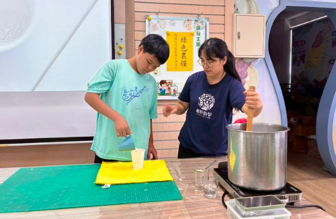

Today Hsinmin's Class 501 visited the Datong Career Exploration Center for a lesson full of knowledge and fragrance — 'hand-poured fresh tofu pudding' — tracing the soybean from field to table and discovering the wonders of the soy industry.
The course opened with the founding vision of Tianye Qinxue ('Diligent Study in the Fields'), built around farming, food and education. Students learned that agriculture is not only about growing crops but is closely tied to our diet, environment and daily life. Through the instructor they met the idea of friendly farming — using sunlight, air and water to reduce the burden on the environment — and learned the difference between conventional and friendly farming, coming to appreciate the value of sustainable agriculture.
Next the children became little farmers, learning how soybeans grow from sowing to harvest. They discovered that soybean roots live in symbiosis with rhizobia, fixing nitrogen from the air into the soil and enriching the land — a crop that is both nutritious and environmentally friendly. From tofu pudding, tofu and dried tofu to soy sauce, natto, miso and soybean oil, the children were amazed that a single small soybean could become such a rich variety of foods.
The highlight was the hands-on tofu-pudding experience. Following the steps, students added coagulant, tapioca starch and the right amount of water to soy milk at around 85°C, learning the science behind it. The instructor shared the 'three secrets' of delicious tofu pudding — concentration, temperature and angle — and every student worked with great focus, hoping their bowl would set perfectly.

When bowl after bowl of smooth, fragrant tofu pudding was finished, the children's faces glowed with achievement. Making it with their own hands and tasting it themselves, they not only enjoyed the flavour but also came to understand the skill and hard work of farmers and food producers.
In this warm, fragrant environment, Class 501 completed a wonderful lesson weaving together food-and-farming education, career exploration and hands-on practice — and gained a deeper understanding of, and respect for, the land, agriculture and the food industry.
🥣🌱【田野勤學 × 職業探索｜手沖鮮豆花體驗】🌱🥣
今天，新民國小五年一班來到大同職探中心，展開一場充滿知識與香氣的「手沖鮮豆花」職業探索課程，從農田到餐桌，深入認識大豆產業的奧妙！
👉課程的一開始，孩子們認識了田野勤學以「農、食、育」為核心的創立願景，了解農業不只是種植作物，更與我們的飲食、環境及生活息息相關。透過講師介紹，學生認識了友善農作的概念，了解農民運用陽光、空氣與水等自然資源耕作，減少對環境的負擔；也學習到慣行農法與友善農法的差異，體會永續農業的重要價值。
📌 接著，孩子們化身小小農夫，認識了大豆從播種到採收的過程，了解了大豆根部是與根瘤菌共生，能將空氣中的氮固定於土壤中，增加土地肥沃度，是兼具營養與環境友善特性的作物。而豆製品加工品，從豆花、豆腐、豆干、醬油、納豆、味噌到大豆油，孩子們發現原來一顆小小的大豆，竟能變化出如此豐富多元的食品，這些知識都讓學生大開眼界。
🎗️最後登場的是手沖豆花體驗！孩子們依照步驟將約85度的豆漿加入凝固劑、木薯粉與適量水分，學習豆花製作背後的科學原理。講師特別分享製作美味豆花的「三度秘訣」——濃度、溫度與角度，每位同學都專注地操作，期待自己的作品成功凝結。
🥰🥰當一碗碗香濃滑嫩的豆花🍵完成時，孩子們臉上洋溢著滿滿成就感💗。親手製作、親口品嘗，不僅感受到食物的美味，更理解農民與食品加工業者背後的專業與辛勞。
🫶🫶在濃醇香的學習環境中，五年一班完成了一場結合食農教育、職業探索與生活實作的精彩課程，也讓孩子們對土地、農業與食品產業有了更深刻的認識與尊重。🌾✨
感謝五年一班導師偲純老師協助帶隊
大同職探中心
新民國小輔導室
職業試探課程
優質新民最佳選擇